La genealogía de maestros (guru-paramparā)
Los maestros de quienes Ācārya Sthaneshwar Timalsina recibió las transmisiones del Sarvāmnāya y de otras disciplinas clásicas.
En las tradiciones de la India, el conocimiento no se transmite solo a través de los libros, sino de maestro a discípulo (guru-paramparā). Cada maestro remite a los suyos, de modo que la enseñanza viva se sostiene en una cadena de personas concretas. Esta entrada presenta, en castellano, la genealogía que recoge Vimarsha Foundation.
Árbol del linaje
 Ācārya Sthaneshwar TimalsinaDepositario actual
Ācārya Sthaneshwar TimalsinaDepositario actual
 Paṇḍita Tanka Prasad TimalsinaPadre y guru védico
Paṇḍita Tanka Prasad TimalsinaPadre y guru védico Svāmī Premchetan BrahmacārīDīkṣā tántrica
Svāmī Premchetan BrahmacārīDīkṣā tántrica
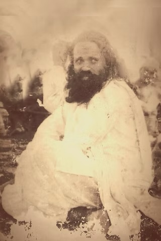
Premacaitanya Brahmacārī, el mayor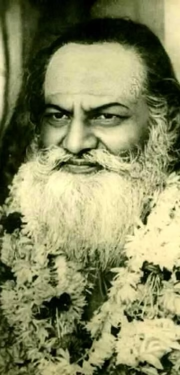
Svāmī Brahmānanda Sarasvatī
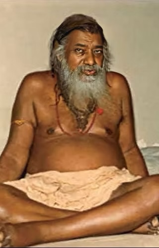
Vidyāraṇya Āśrama (Mūrkhāraṇya)
 Śaṅkara Caitanya BhāratīDīkṣā tántrica
Śaṅkara Caitanya BhāratīDīkṣā tántrica
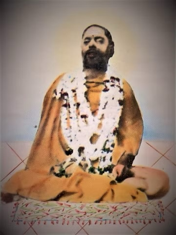
Śaṅkara Caitanya Bhāratī, el mayor
 Khaptaḍa BābāYoga
Khaptaḍa BābāYoga Rāmānanda GiriVedānta
Rāmānanda GiriVedānta
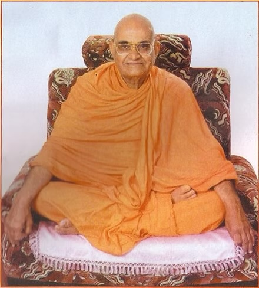
Svāmī Maheśānanda Giri
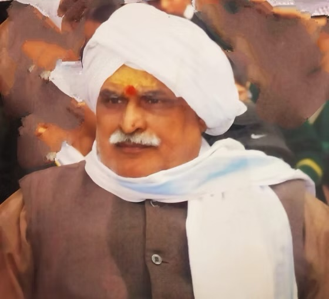
Ācārya Rāmaji MālavīyaTrikaśāstra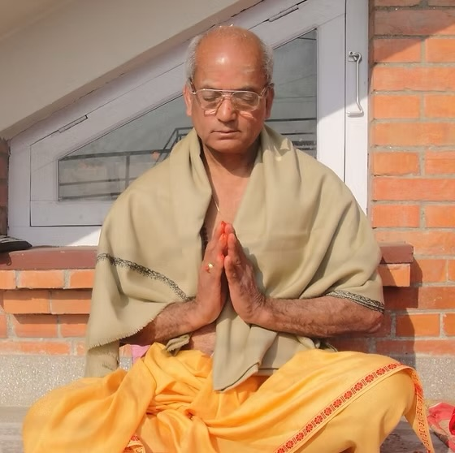
Vidyānāth Upādhyāya BhaṭṭaNyāya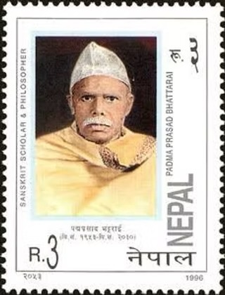
Paṇḍita Padma Prasad Bhattarai
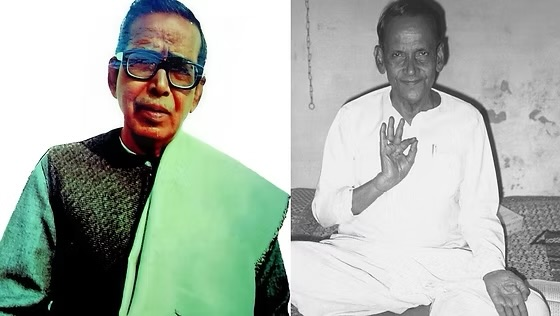
V. V. Dvivedi y H. N. ChakravartyTantraśāstra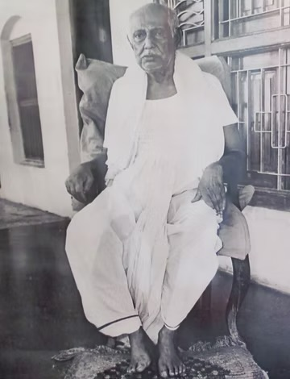
Gopīnāth Kavirāj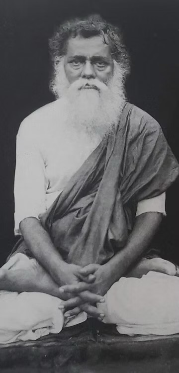
Viśuddhānanda Paramahaṃsa
 Yogī KṣiprānāthHaṭhayoga
Yogī KṣiprānāthHaṭhayoga
Cada rama asciende de un maestro a los suyos. Algunas líneas se entrecruzan. Rāmaji Mālavīya, por ejemplo, recibió también la iniciación en el Sarvāmnāya de Śaṅkara Caitanya Bhāratī, y Maheśānanda Giri enseñó directamente las Upaniṣad a Ācāryaji en Varanasi.
- Depositario actual de la tradición
Ācārya Sthaneshwar Timalsina
Fundador de Vimarsha Foundation y titular de la cátedra de Humanidades Índicas Clásicas de la Stony Brook University. Recibió la transmisión completa del Sarvāmnāya de los maestros que siguen.
Maestros de Ācāryaji
- Padre y guru védico
Paṇḍita Tanka Prasad Timalsina
Dirigía un gurukula védico en una familia de sacerdotes de Kālī. Le enseñó el Śukla Yajurveda y le dio su primera iniciación śaiva y sus primeras prácticas tántricas.
- Guru principal de dīkṣā tántrica
Mahāmaheśvara Paramabhaṭṭāraka Sarvatantrasvatantra Vidyābhūṣaṇa Svāmī Śrī Premchetan Brahmacārī
Nacido en el distrito de Syangja (Nepal), se formó en el gurukula de Chisa Kola y en Pokhara, y practicó en el templo de Kālikā Bhagavatī de Baglung. Vivió después en Katmandú, junto al templo de Paśupatināth. Durante catorce años transmitió a Ācāryaji la estructura completa del tantra Sarvāmnāya.
- Guru de dīkṣā tántrica
Śaṅkara Caitanya Bhāratī
Originario de Cachemira, vivió la mayor parte de su vida en Varanasi, donde fue ācārya del santuario de Viśvanātha. A comienzos de los años noventa le dio la iniciación de la transmisión superior (ūrdhvāmnāya), y en 1996 la consagración como ācārya (ācārya abhiṣeka).
- Guru de yoga
Paramahaṃsa Svāmī Śrī Saccidānanda Sarasvatī (Khaptaḍa Bābā)
Santo cachemir que recorrió el Himalaya y vivió como ermitaño en Nepal durante más de cuarenta años. Le enseñó textos yóguicos como los Yogasūtra y el Vijñānabhairava Tantra.
- Guru de Vedānta
Rāmānanda Giri
Discípulo de Maheśānanda Giri, del Śaṅkara Maṭha de Monte Abu. Durante doce años lo formó a diario en Vedānta, Nyāya y Mīmāṃsā. Fundó después un gurukula sánscrito en Devghat (Nepal).
- Guru de Trikaśāstra
Ācārya Rāmaji Mālavīya
Iniciado en el śaktipīṭha de Pītāmbarā en Datia y en el Sarvāmnāya por Śaṅkara Caitanya Bhāratī, fue decano de la Universidad Sánscrita Sampurnananda de Varanasi. Le enseñó los comentarios del Siddhānta y del Trika, sobre todo las obras de Abhinavagupta.
- Guru de Nyāya
Vidyānāth Upādhyāya Bhaṭṭa
Maestro del tantra Sarvāmnāya en el linaje Lambakarṇa Bhaṭṭa del Kālīkrama nepalí. Durante años le enseñó Nyāya y Navya-Nyāya.
- Gurus de Tantraśāstra
Vraja Vallabha Dvivedi y Hemendra Nath Chakravarty
Discípulos de Mahāmahopādhyāya Gopīnāth Kavirāj, le enseñaron varios tratados tántricos durante sus años en Varanasi.
- Guru de haṭhayoga
Yogī Kṣiprānāth
Considerado un mahāsiddha y maestro del yogui Naraharināth, vivía retirado y le enseñó el haṭhayoga de la orden Nātha en Mṛgasthalī.
Maestros de sus maestros (paramaguru)
- Paramaguru
Mahāmaheśvara Paramabhaṭṭāraka Sarvatantrasvatantra Vidyābhūṣaṇa Svāmī Śrī Premacaitanya Brahmacārī, el mayor
Maestro de Svāmī Premchetan en el gurukula de Chisa Kola, que cerró tras su muerte.
- Paramaguru
Ananta Śrī Vibhūṣita Avadhūta-Śiromaṇi Śrī Śrī 1008 Śrī Vidyāraṇya Āśrama (Mūrkhāraṇya)
Enseñó a Svāmī Premchetan en Katmandú. Se le tiene por uno de los grandes tántricos del siglo XX.
- Paramaguru
Śaṅkara Caitanya Bhāratī, el mayor
Maestro cachemir de Śaṅkara Caitanya Bhāratī, autor del Darśana Sarvasva y del comentario Śāradā.
Una generación anterior (parameṣṭhiguru)
- Parameṣṭhiguru
Mahāmahopādhyāya Gopīnāth Kavirāj
Gran tántrico y paṇḍita de Varanasi en el siglo XX, impulsor del renacimiento de los estudios tántricos y discípulo de Viśuddhānanda Paramahaṃsa.
- Parameṣṭhiguru
Svāmī Maheśānanda Giri
Maestro de Vedānta del Śaṅkara Maṭha de Monte Abu. Enseñó las Upaniṣad a Ācāryaji en Varanasi.
- Parameṣṭhiguru
Paṇḍita Padma Prasad Bhattarai
Gran conocedor del Nyāya, maestro de Vidyānāth Upādhyāya.
- Parameṣṭhiguru
Yogīrājādhirāja Svāmī Śrī Viśuddhānanda Paramahaṃsadeva
Yogui y maestro tántrico, guru de Gopīnāth Kavirāj.
- Parameṣṭhiguru
Ananta Śrī Vibhūṣita Jagadguru Bhagavān Śaṅkarācārya Śrīmajjyotiṣpīṭhādhīśvara Svāmī Śrī Brahmānanda Sarasvatī
Śaṅkarācārya de Jyotir Maṭha, en la línea de Premacaitanya Brahmacārī.
Otros maestros de la tradición
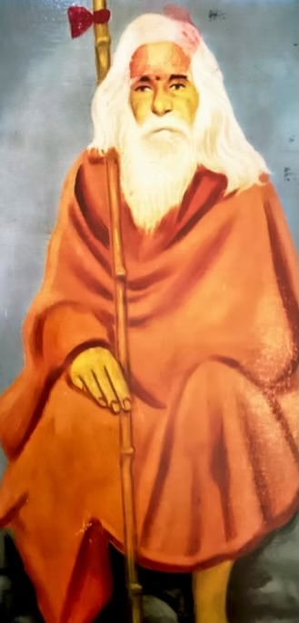
Maestro de la tradiciónAnanta Śrī Vibhūṣita Svāmīśrī Saccidānandāśrama jī Mahārāja
Vimarsha Foundation lo incluye en la genealogía de la tradición.
Términos clave
- guru-paramparā
- transmisión de maestro a discípulo
- dīkṣā
- iniciación
- paramaguru
- el maestro del propio maestro
- parameṣṭhiguru
- el maestro del paramaguru
- ācārya abhiṣeka
- consagración como maestro
Fuente
- Vimarsha Foundation. Our Lineage. https://www.vimarshafoundation.org/lineage
Esta entrada traduce y resume en castellano la información de la fuente indicada. Imágenes: Vimarsha Foundation.